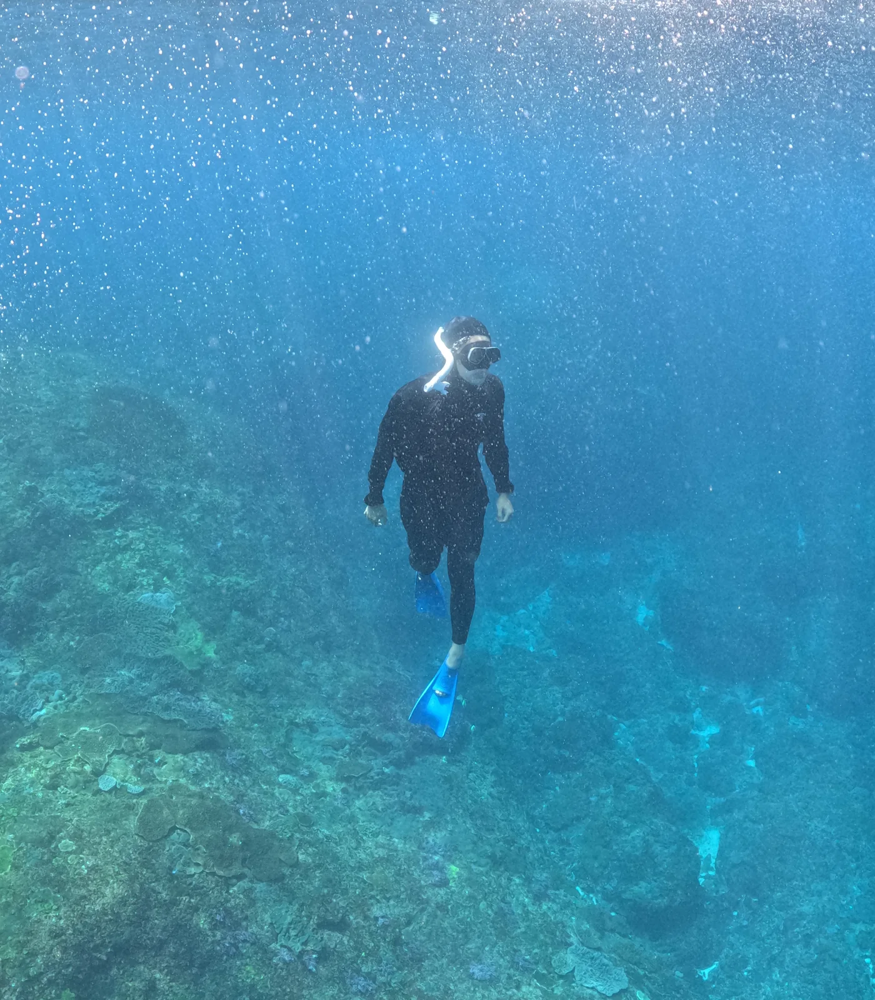
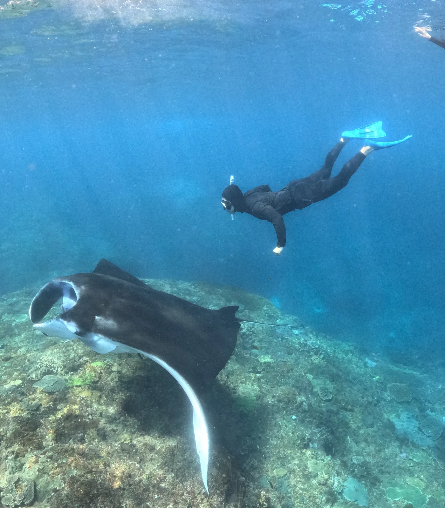
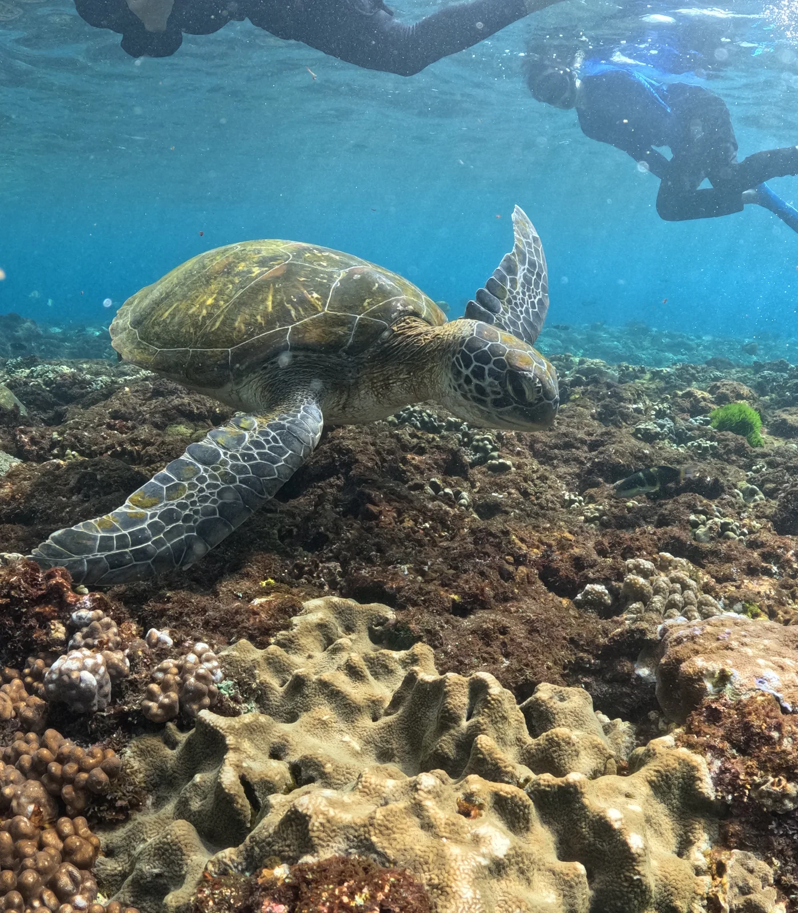

← Off the Clock
Freediving · Freediving off Nusa Penida
I went freediving off Nusa Penida, Bali, on September 18. A manta ray glided beneath me, its white underside showing as it turned over the reef. I also spotted a sea turtle and could see the pattern on its flippers. Looking at all that blue, you’d never guess how cold the water felt.



